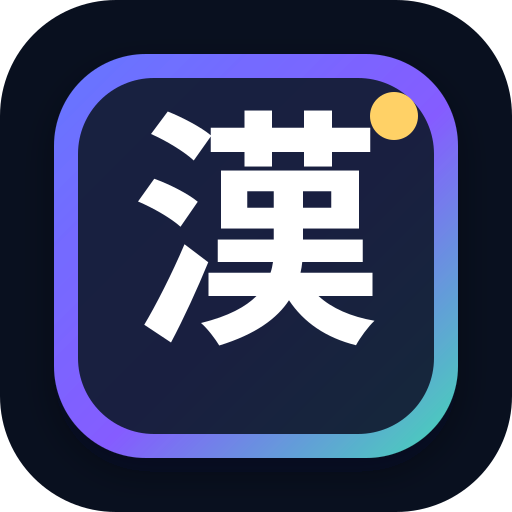

HANJA LAB · APP 2.0
홈
설치
⌕
↻
⚙
漢字 올인원 트레이너
한국어문회 · 8급 → 특급 · 훈음/독음/쓰기/응용/기출빈도/오답 · iPhone/iPad 지원
배정한자 로딩 중
기출 빈도 0건
홈
학습
도감
日本
기록
전체 찾기
한자 · 기능 · 일본 단어를 한 번에 찾습니다.
×
⌕
🔥 빈출
↻ 오답
試 기출
日 단어쓰기
홈
학습
도감
日本
기록
업데이트 센터
웹앱과 Android 앱 버전을 확인합니다.
×
버전 확인 중…
새 버전 준비됨
학습 기록은 그대로 유지됩니다.
업데이트